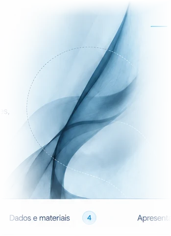

LAPELC² / PRODUÇÃO
Produção
Nossa produção reúne artigos científicos, teses e dissertações, dados e materiais, e apresentações em eventos, refletindo as diferentes frentes de investigação do laboratório.

01 / PRODUÇÃO
Artigos
científicos
Registros públicos do fonUFAL. As publicações e sua atribuição específica ao Lapelc² podem ser revisadas na etapa editorial.
- 2026↗The Impact of Prosodic Segmentation on Speech Synthesis of Spontaneous SpeechJulio Cesar Galdino, Sidney Leal, Leticia de Souza, Rodrigo Lima et al.
Lecture Notes in Computer Science - 2025↗Plataforma da Diversidade Linguística Brasileira: dados linguísticos para uma IA brasileiraRaquel Freitag, Marcia dos Santos Machado Vieira, Juliana Bertucci Barbosa, Miguel Oliveira Jr. et al.
Cadernos de Linguística - 2025↗O uso da prosódia na percepção de fronteiras de eventos narrados em português brasileiroEbson Wilkerson Rocha da Silva, Arthur Ronald Brasil Terto, Miguel Oliveira Jr.
fonUFAL — publicações
- 2026↗Da contração à rarefação? Homenagem a João Antônio de MoraesMiguel Oliveira Jr. (Org.)
Mercado de Letras - 2025↗Prosodic Interfaces: Interdisciplinary Perspectives on Sound Patterns and Human InteractionMiguel Oliveira Jr.
De Gruyter - 2022↗Prosódia, Prosódias: uma introduçãoMiguel Oliveira Jr.
Contexto
- 2025↗Investigação da prosódia e dos padrões de fixação ocular em transições de turno de conversas espontâneas diádicasRemildo Barbosa da Silva
Tese de doutorado — Universidade Federal de Alagoas - 2025↗A prosódia como marca de segmentação discursiva baseada em eventos: um estudo de percepção com rastreamento ocularArthur Ronald Brasil Terto
Dissertação de mestrado — Universidade Federal de Alagoas - 2023↗O papel da prosódia no processamento do discurso em língua portuguesa: um estudo de percepção em laboratório on-lineEbson Wilkerson Rocha da Silva
Tese de doutorado — Universidade Federal de Alagoas - 2018↗Electrophysiological correlates of prosodic boundaries at different levels in Brazilian PortugueseOyedeji Musiliyu
Tese de doutorado — Universidade Federal de Alagoas - 2018↗A mentira tem perna curta? Elementos prosódicos como pistas para identificação de discurso enganosoRemildo Barbosa da Silva
Dissertação de mestrado — Universidade Federal de Alagoas - 2017↗A prosódia e o processamento on-line de sentenças ambíguas do português brasileiroRené Alain Santana de Almeida
Tese de doutorado — Universidade Federal de Alagoas - 2017↗A relação entre produção e percepção de pistas prosódicas na segmentação de narrativas espontâneasEbson Wilkerson Rocha da Silva
Dissertação de mestrado — Universidade Federal de Alagoas - 2014↗Características prosódicas dos números telefônicos no português brasileiroOyedeji Musiliyu
Dissertação de mestrado — Universidade Federal de Alagoas
A consulta aos dados e materiais deve ser realizada nos repositórios indicados nos projetos.
Consultar acervo público ↗Consulte as apresentações e atividades científicas no site fonUFAL.
Consultar acervo público ↗02 / ACESSO ABERTO
Ciência que circula.
Sempre que possível, disponibilizamos versões em acesso aberto, dados e materiais complementares.